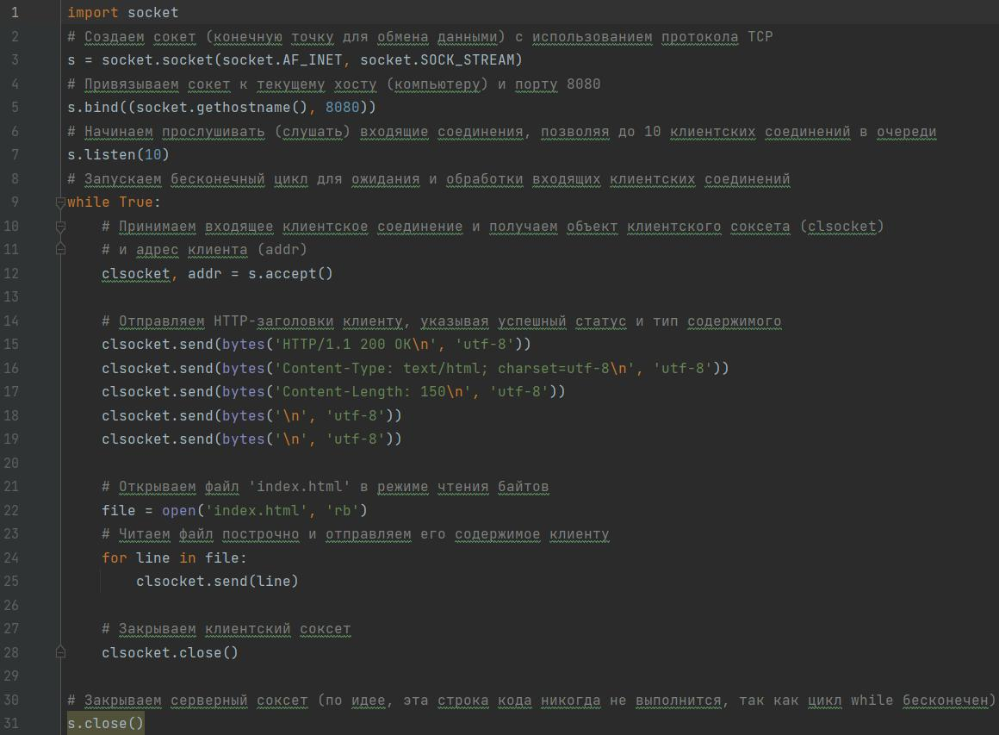
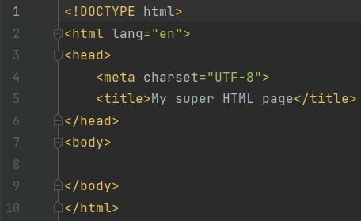
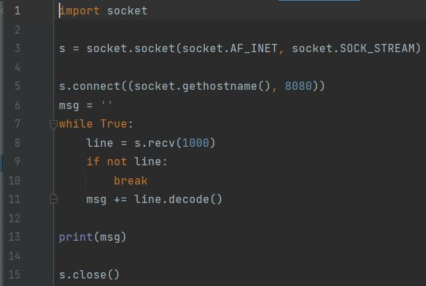

Задание 3
Серверная часть

Сокет после установки соединения отправляется html-сообщение клиенту построчно, а затем также передает файл index.html.
html-страница 
Клиентская часть

Клиент только получает данные, посылаемые сервером, и выводит их в консоль.
Пример работы программы